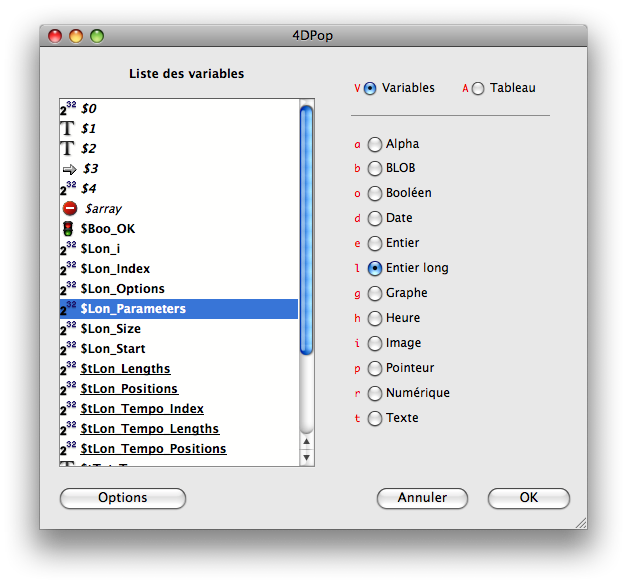
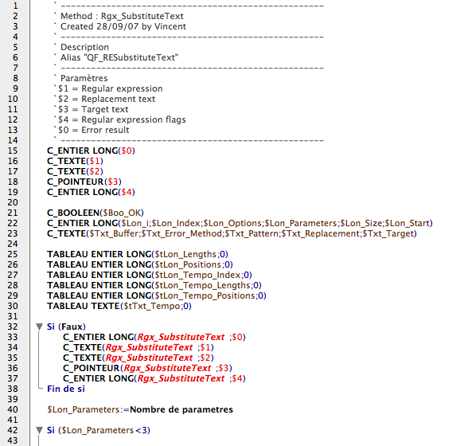
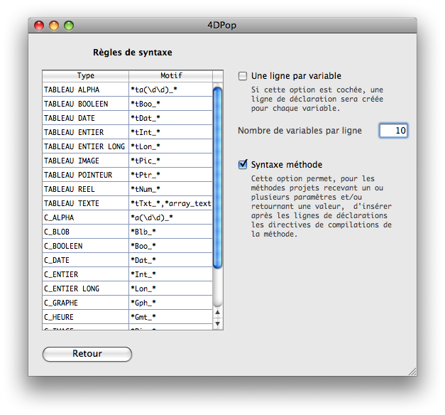
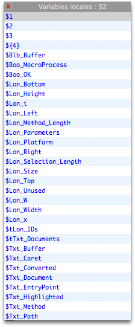
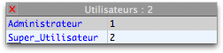

4DPop Macros est un composant qui installe un certain nombre de macros qui viennent assister le développeur dans l'éditeur de méthodes.
Les macros sont automatiquement installées et disponibles dans l'éditeur de méthode, elles peuvent êtres invoquées :
Pour plus d'informations sur l'utilisation et le fonctionnement des macros, vous pouvez vous reportez à la documentation du mode développement de 4D.
Lorsque le composant est correctement installé et chargé, ce fichier d'aide est accessible en sélectionnant l'item "Aide de 4DPop Macros" dans le menu "Aide" de la base en cours de développement.
Nom |
Action |
Menu |
Saisie |
Raccourci |
Refaire la dernière macro |
Relance la dernière macro exécutée dans la méthode en cours |
oui |
|
+ |
Déclarations… |
Aide à la déclaration des variables locales. |
oui |
|
$ |

|
Cette macros analyse le texte de la méthode en cours d'édition pour en extraire les variables locales et les paramètres. Elle affiche ensuite un dialogue d'aide à la déclaration des variables locales.
Dans ce dialogue, chaque ligne de la liste représente une variable locale ou un paramètre parmis ceux qui ont été détectés. Chaque objet est précédé d'une icône qui symbolise son type s'il est connu. Le "Sens interdit" signale une variable dont le type n'est pas encore connu. Un attribut typographique différent est appliqué aux différentes variable en fonction de son statut :
Gras = Variable dont le type est connu, Gras + Souligné = Tableau de type connu, Italique = Type inconnu

La partie droite de la fenêtre permet de régler les attributs de l'objet sélectionné : Variable ou Tableau, Type et éventuellement longueur. Les lettres en rouges rappellent les raccourcis clavier.
Une fois toutes les attributs fixés, un clic sur le bouton de validation referme le dialogue et les directives de compilations sont collées dans la méthode avant la première ligne non commentée. Les variables non typées sont ignorées, les déclarations qui étaient faites en cours de méthode, ainsi que les éventuels blocs déclaratifs antérieurs sont supprimés.

Lors de l'analyse, le type des variables et des paramètres est déduit de la lecture, s'il y en a, des directives de compilation rencontrées et de l'analyse du nom des variables. Si vous utilisez une nomenclature, l'assistant peut analyser la méthode selon vos règles vous évitant ainsi de renseigner les propriétés de chaque objet. Vous pouvez paramétrer les règles de nommage dans la page "Option" du dialogue.

La zone "Règle de syntaxe", à gauche, permet d'enregistrer les motifs qui seront reconnus pour chaque type de variable. Dans ce motif les caractères sont pris pour leur valeur excepté :
Attention les motifs sont diacritiques.
Si plusieurs motifs doivent êtres reconnus, ceux-ci seront séparés par une virgule (,)
Exemple : Pour la ligne TABLEAU TEXTE de la figure ci-dessus "*tTxt_*,*array_text*" interprétera comme étant de type TABLEAU TEXTE toutes les variables contenant dans leur nom l'une de ces deux séquences soit, par exemple, la variable "$tTxt_monTableau" mais aussie à "$Doc_tTxt_Documents" et encore à "$Document_array_text"
Deux autres options sont disponibles dans cette page
- Une ligne par variable : Si cette option est cochées les déclarations se feront effectivement à raison d'une variable par ligne. Dans le cas contraire, les variables sont regroupées par type dans une seule commande de déclaration jusqu'à concurrence du nombre de variables par ligne que vous avez paramétré dans la zone prévue à cet effet.
- Syntaxe de la méthode : Si cette option est cochée la macro produit également avec le bloc de déclaration le bloc de déclaration à recopier dans les méthodes compiler (Ce code est collé dans un bloc Si(Faux)...Fin de si de telle sorte qu'il ne gène pas l'exécution de la méthode.
Notes :
-
Les déclarations de tableau dont la dimension est assignée grâce une variable, comme TABLEAU TEXTE($array;$Size), ou bien à un nombre écrit en hexadécimal, comme TABLEAU TEXT($array;0x0000), ne sont pas prises en compte. En d'autres termes, la déclaration du tableau ne sera pas reprise par l'assistant et cette ligne ne sera pas remontée en début de méthode. Ceci permet de cantoner des déclarations de tableaux qui ne sont pas utiles à l'ensemble de la méthode à une partie du code seulement.
-
Les tableaux à 2 dimensions ne sont pas gérés pour le moment, il est donc préférables de les initialiser avec des tailles exprimées en héxadecimal.
-
Si l'analyse détecte des appels de paramètres par indirection, ${$i} par exemple, l'assistant poduira une ligne adéquate dans la liste des paramètres. Exemple : C_ENTIER($1) puis C_TEXTE(${2})
|
|
Sauvegarder la méthode |
L'exécution de cette macro sauvegarde le texte de la méthode en cours d'édition dans un document placé dans un dossier "Method_Backup" situé à côté du fichier structure. Si le dossier n'existe pas, celui-ci sera créé. La macro se charge d'ajouter un Nº de version derrière le nom pour ne pas écraser une version précédente. |
oui |
|
|
Liste des variables locales |
Affiche la liste des variables locales de la méthode en cours d'édition. |
oui |
$ |
|
|
 |
La commande analyse la méthode en cours d'édition puis présente une liste des variables locales et des paramètres utilisés.
Pour vous déplacer dans la liste, utilisez les touches Flèche haute ou Flèche bas, les touches Début et Fin de document.
Vous pouvez également taper les premières lettres d'une variable (sans le $ initial) pour sélectionner plus rapidement une ligne.
Pour coller le nom d'une variable ou d'un paramètre dans l'éditeur de méthode, il faut soit double cliquer sur une ligne soit, sélectionner l'une d'elles et taper Enter ou Tabulation ou Retour chariot
Il est possible de refermer la fenêtre sans rien coller dans la méthode en cliquant sur la croix rouge de la barre de titre ou en tapant la touche Escape.
En cas d'inactivité, la fenêtre se fermera automatiquement au bout de 30 secondes.
Note : Cette macro est associée au caractère $ en saisie prédictive. Il suffit ainsi de tapez "$" puis tabulation pour faire apparaître la liste des variables locales de la méthode.
|
|
|
Liste des groupes |
Affiche une liste des groupes paramétrés dans la base courante. |
oui |
_g |
|
| |
|
La liste des groupes (nom et ID) tels qu'ils sont paramétrés dans le panneau des groupes de la boîte à outils est présentée dans une fenêtre popup.
Pour coller le nom du groupe sélectionné dans la méthode au niveau du point d'insertiopn, il suffit de taper un retour chariot ou double cliquer dessus. Si la touche Option/Alt est enfoncée, c'est l'ID du groupe qui est collée dans l'éditeur de méthode. |
|
|
Liste des utilisateurs |
Affiche une liste des utilisateurs paramétrés dans la base courante. |
oui |
_u |
|
| |
 |
La liste des utilisateurs (nom et ID) tels qu'ils sont paramétrés dans le panneau des utilisateurs de la boîte à outils est présentée dans une fenêtre popup.
Pour coller le nom de l'utilisateur sélectionné dans la méthode au niveau du point d'insertiopn, il suffit de taper un retour chariot ou double cliquer dessus. Si la touche Option/Alt est enfoncée, c'est l'ID de l'utilisateur qui est collée dans l'éditeur de méthode. |
|
|
Copier & remplacer |
Remplace le sélection par le contenu du presse-papiers tout en y conservant cette dernière |
oui |
|
© |
|
Cette macro se révèle souvent utile même si l'explication de son fonctionnement paraît complexe.
Le scénario d'utilisation est le suivant :
Vous tapez du code faisant référence à une expression calculée puis vous constatez que vous avez plus loin à nouveau besoin de cette expression et décidez de placer l'expression dans une variable intermédiaire. Il faut dans ce cas taper $maVariable:=MonExpression puis allez remplacer MonExpression" par "$maVariable.
Avec la macro vous tapez $maVariable et copiez ce texte. Vous sélectionnez MonExpression et invoquez la macros : "MonExpression" est placé dans le presse-papiers et remplacé par "$maVariable". Vous positionnez le curseur après le texte "$maVariable" et tapez := puis collez le contenu du presse-papiers pour obtenir $maVariable:=MonExpression. |
|
Collage spécial |
Coller le texte contenu dans le presse-papiers dans différents formats. |
oui |
_p |
◊ |
| |
La commande affiche un dialogue permettant de choisir le format du texte qui sera collé dans l'éditeur de méthode. La zone de "Résultat" permet de visualiser le texte tel qu'il sera collé.
.
Les formats disponibles sont :
- Chaîne : Le texte est collé entre deux guillemets, les caractères spéciaux sont échappés (\r, \n, \t et \").
- Commentaires : Chaque ligne est précédé d'une marque de commentaire, le texte n'est pas modifié.
- HTML : Le code html contenu dans le presse-papiers est affecté à une variable locale. Les caractères sont échappés.
Exemple, le texte :
<TR>
<TD valign="top" nowrap><HR>
<DIV align="left" class="macro">Insérer une couleur</DIV></TD>
<TD valign="top"><HR></TD>
<TD valign="top"><HR></TD>
<TD valign="top"><HR></TD>
<TD valign="top"><HR></TD>
</TR>
sera collé sous cette forme :
C_TEXTE($Txt_HTML)
$Txt_HTML:=""
$Txt_HTML:=$Txt_HTML+"<TR>\r"
$Txt_HTML:=$Txt_HTML+" <TD valign=\"top\" nowrap><HR>\r"
$Txt_HTML:=$Txt_HTML+" <DIV align=\"left\" class=\"macro\">Insérer une couleur</DIV></TD>\r"
$Txt_HTML:=$Txt_HTML+" <TD valign=\"top\"><HR></TD>\r"
$Txt_HTML:=$Txt_HTML+" <TD valign=\"top\"><HR></TD>\r"
$Txt_HTML:=$Txt_HTML+" <TD valign=\"top\"><HR></TD>\r"
$Txt_HTML:=$Txt_HTML+" <TD valign=\"top\"><HR></TD>\r"
$Txt_HTML:=$Txt_HTML+" </TR>\r"
- Pattern regex : Colle le contenu texte du presse-papiers dans l'éditeur de méthode entre deux guillemets. Les caractères spéciaux du motif sont échappés pour pouvoir être utilisés comme tel en prenant en compte que l'antislash doit lui même être échappé dans 4D.
Les caractère traités sont :
* |
-> |
\\* |
|
} |
-> |
\\} |
+ |
-> |
\\+ |
|
Espacement |
-> |
\\s |
( |
-> |
\\( |
|
Retour chariot |
-> |
\\r |
) |
-> |
\\) |
|
Tabulation |
-> |
\\t |
{ |
-> |
\\{ |
|
Espace insecable |
-> |
\\xCA |
Pour certains formats des options de traitement sont disponibles :
- Supprimer l'indentation : Efface du texte collé tous les caractères invisibles en début et fin de ligne (espace, tabulation, espace insécable...).
- Ignorer les lignes vides : Ne prends pas en compte les lignes ne contenant aucun caractère.
Le derniers formats utilisé et les options sont mémorisés d'un appel à l'autre et d'une session à l'autre. |
|
Coller une couleur |
Affiche la fenêtre système de sélection de couleur et colle au niveau du point d'insertion la valeur RVB , formattée en hexadécimal, de la couleur sélectionnée par l'utilisateur. |
oui
|
_c |
|
Dupliquer et commenter |
Le texte sélectionné est sauvegardé sous forme de commentaire immédiatement avant la sélection. Ceci permet de garder du code avant de le modifier. |
oui |
|
|
Editer commentaire… |
Cette commande propose une fenêtre de saisie pour les commentaires |
oui |
|
|
| |
Le texte sélectionné est copié et affiché dans unefenêtre d'édition dans laquelle vous pouvez saisir le commentaire sans vous soucier des contraintes de l'éditeur. Quand la saisie est validée, la macro ajoute, là où cela est nécessaire, les marques de commentaires.

Le bouton "Insérer" permet de plus de coller dans le texte des tags qui seront remplacés par leur valeur au moment de la validation. Les tags disponibles sont : date, time, user_4d, user_os, version_4d, database_name, method_name, form_name.
Si il n'y a pas de texte sélectionné au moment de l'appel de cette macro, la zone de saisie est vide à l'ouverture et un nouveau commentaire sera inséré au niveau du point d'insertion si la saisie est validée. |
|
MAJUSCULE |
Passe le texte sélectionné en majuscule. |
oui |
|
|
minuscule |
Passe le texte sélectionné en minuscule. |
oui |
|
|
camelCase |
Passe le texte sélectionné en notation camelCase : Les espaces et les soulignements bas sont supprimés. La première lettre de chaque mot est capitalisée. $ma_variable_texte sera transformé en $maVariableTexte |
oui |
|
|
Texte vers html |
Converti une expression texte en texte html. Exemple le texte :
Sélectioner un texte accentué pour obtenir sa traduction en code HTML
sera converti en :
Sélectioner un texte accentué pour obtenir sa traduction en code HTML
La conversion est faite en utilisant les options de conversion de texte du serveur web de 4D "Préférences… > Web > Options > Conversion texte" |
oui |
|
|
Texte vers UTF-8 |
Converti le texte sélectionné est converti en UTF-8. Exemple : Génère sera transformé en G√©n√®re |
oui |
|
|
UTF-8 vers texte |
Effectue l'action inverse de la commande précédente. |
oui |
|
|
Convertir en Hexa |
Cette commande converti la valeur numérique sélectionné en notation hexadécimale compatible avec l'éditeur de méthode. |
oui |
|
|
Convertir en décimal |
Cette commande converti la valeur numérique écrite en hexadécimal en nombre décimal. |
oui |
|
|
Expression inverse |
Analyse les lignes sélectionnées et les traduit en leur expression inverse. |
oui |
|
|
| |
Quelques exemples :
ENTIER LONG VERS BLOB($Long;$Blob;Ordre octets Macintosh;*) |
-> |
$Long:=BLOB vers entier long($Blob;Ordre octets Macintosh;*) |
$Text:=Chaine ($Long) |
-> |
$Long:=Num($Text) |
ADJOINDRE ELEMENT([Table];"ensemble") |
-> |
ENLEVER ELEMENT([Table];"ensemble") |
ENUMERATION VERS TABLEAU ("Enumeration"; $tTxt_Elements; $tLon_References) |
-> |
TABLEAU VERS ENUMERATION($tTxt_Elements;"Enumeration";$tLon_References) |
|
|
Ce composant est fourni en version compilée, mais vous trouverez le code source dans le dossier "SOURCES" à l'intérieur du dossier du composant.